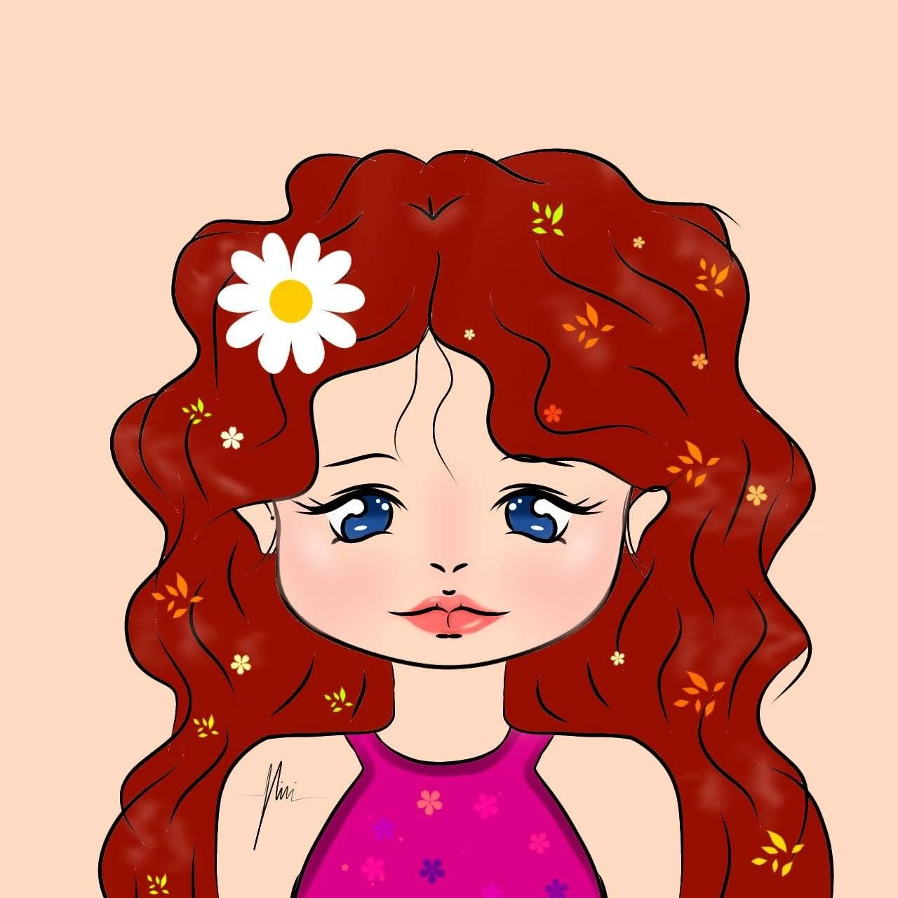

MEET THE AUTHOR
BitterNini
Author of Enigmatic Dream
About the Author
BitterNini is a Filipino writer who found solace in the art of storytelling. While she explores various genres, she is most at home in teen fiction and romance, where emotions are raw and connections feel real. She began writing at the age of fourteen, filling notebooks with stories shared only with her closest friends.
For her, writing is more than a hobby—it’s her way to breathe. As an introvert, she often keeps her truest thoughts tucked away, but through her words, she creates quiet worlds where feelings are soft, honest, and deeply human.
Beyond the page, BitterNini is a lover of rhythm and movement, often dancing to K-pop choreographies she has memorized by heart. She enjoys watching anime, immersing herself in books, and scrolling endlessly through TikTok and reels for inspiration or laughter. Through every chapter she writes, she hopes to leave a piece of herself for readers to hold onto.